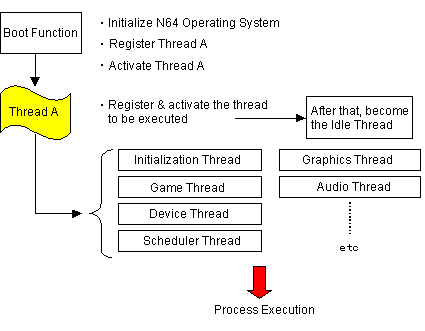

At the beginning of every N64 game application, the boot function specified by a programmer is activated. (For convenience, it is called the boot function, but strictly speaking whatever is specified by the entry command in the spec file becomes the boot function.) This boot function is similar to the typical C program's main function in that it is the first function called in the program.
The boot function initializes the operating system and passes control to the first thread to begin processing (thread A in the following illustration). Note that control migrates as threads pass control and end. When thread A finishes, it becomes the idle thread. The following illustration shows the basic flow.

Nintendo® Confidential
Copyright © 1999
Nintendo of America Inc. All Rights Reserved
Nintendo and N64 are registered trademarks of Nintendo
Last Updated March, 1999